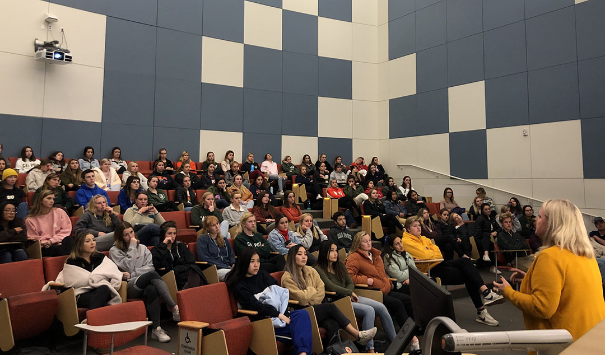
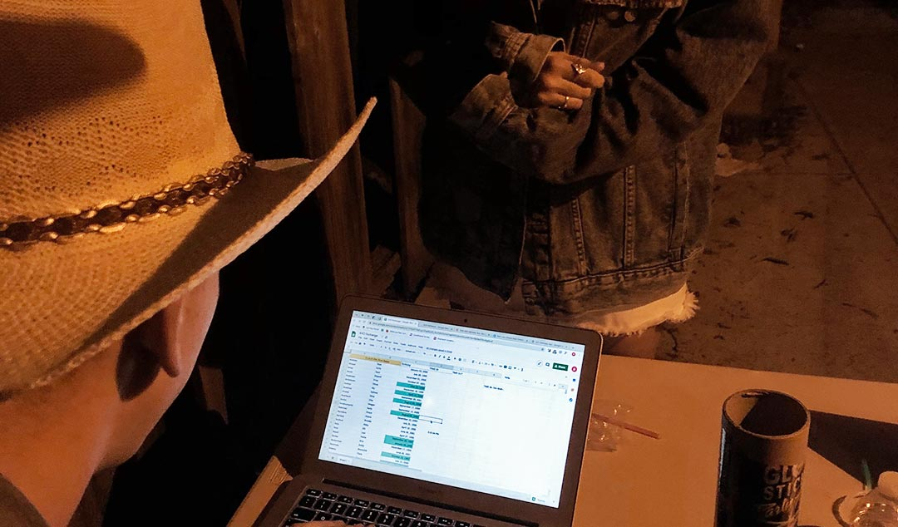
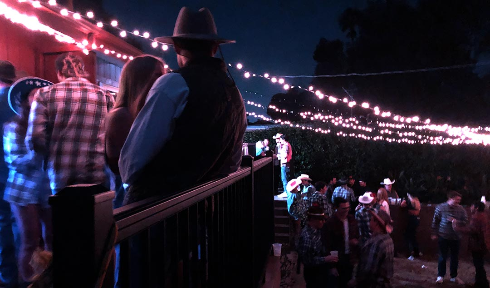
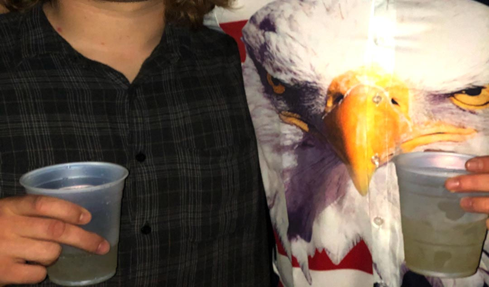
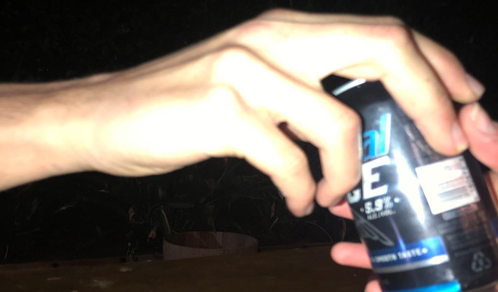
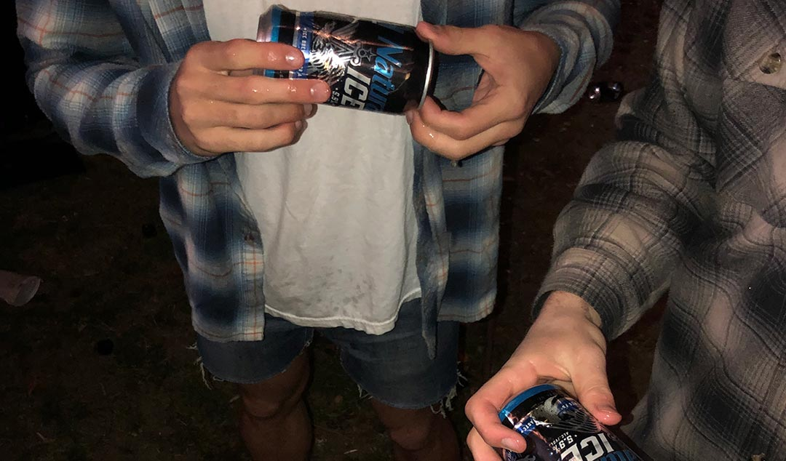
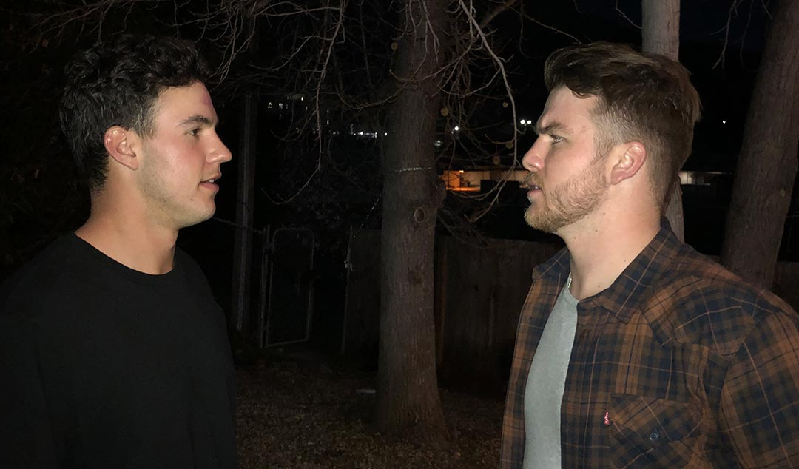

1 / 7

February 4th, 2020, Cal Poly San Luis Obispo, Baker Math and Science Building –
Christine Wallace, Civilian Correspondent of San Luis Obispo Police Department and myself, Joey Stephens, facilitated a social risk management training to students of Cal Poly. The goal of the presentation is to educate students on safe drinking habits, risks and liabilities that come with hosting or attending social events, and how to be compliant with both University policy and San Luis Obispo law.
2 / 7

February 7, 2020, San Luis Obispo, Cal Poly Student Off-Campus Social Event –
A young woman waits to be checked into a registered student social event with alcohol as 4th year student and sober monitor, Brady Corcoran, finds her name on the guest list. Student organizations that choose to have off-campus social events are required to adhere to strict policies to ensure safety and proper risk management. It is required that organizations submit a guest list for every social event they plan to host and to use it to check all guests into the event. The goal is to know who exactly is at your event, so you know who exactly you are responsible for, should something go wrong.
3 / 7

February 7, 2020, San Luis Obispo, Cal Poly Student Off-Campus Social Event –
Students gathered to socialize on Friday evening after a long week of midterms and schoolwork. When hosting social events at home with an outside area, overhead lights are encouraged, even though they are not required. A well-lit area will provide for more vision and awareness for all guests in the event of an incident while individuals may be intoxicated. Should individuals need to vacate the premises quickly for any reason, they will need to see where they are going. Extra lighting also helps the host to see everything that is going on at their home and that all in attendance are acting appropriately.
4 / 7

February 7, 2020, San Luis Obispo, Cal Poly Student Off-Campus Social Event –
Two undergraduate students hold their margaritas in one hand and embrace each other with the other. All alcohol served at off-campus social events must be under the 15% Alcohol by Volume limit, and while most margarita mixes are under that limit, they are discouraged due to the fact that they have to be poured into a cup. Alcoholic beverages in an open cup increase risk several ways. For instance, they can have other substances, or even more alcohol added to them very easily after it is out of the hand of the bartender.
5 / 7

February 7, 2020, San Luis Obispo, Cal Poly Student Off-Campus Social Event –
A student takes a canned beer from a sober monitor whose responsibility for the evening is to act as the bartender. Student organizations are required to have a team of sober monitors at all off-campus social events with alcohol present. It is also required that some sober monitors be behind a bar, as they are the ones who should distribute the alcohol. If you can control how much and what type of alcohol your guests are drinking, rather than letting them bring their own alcohol (i.e. a bottle of vodka), you can ensure that no guest will become overly intoxicated
6 / 7

February 7, 2020, San Luis Obispo, Cal Poly Student Off-Campus Social Event –
Two students at a social event prepare to “shotgun” a beer. “Shotgunning” is a form of rapid consumption of alcohol in which the beer is consumed in one single effort. Any form of rapid consumption of alcohol is strictly prohibited at social events, as it encourages an unhealthy environment of binge drinking. Consuming too much alcohol in a short span of time can lead to heavy intoxication and even incapacitation from alcohol.
7 / 7

February 7, 2020, San Luis Obispo, Cal Poly Student Off-Campus Social Event –
3rd-year students, Jared Gormley and Nolan Binkele, discuss risk management strategy as they act as Sober Monitors for their organization. A basis of 3 sober monitors is required at each event with alcohol present to be compliant with University policy. Additionally, another sober monitor is required for each 40 guests in attendance. With an entire team of students acting sober monitors with different responsibilities, Gormley and Binkele act as the leaders, seeing that each monitor fulfills their respective roles.
❮
❯